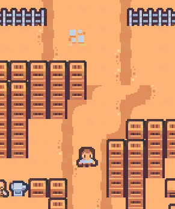

I want to say special thanks to Hisham Ata.
One of the instructors at Toronto Film School who had a heavy hand in my ability to get this
far in the first place. For whom without, this project would not be have come together
in the first place.
Android. It was a whole other beast then Windows. For so many reasons.
Before I even started writing code, there background research I wanted to do.
Allow me to ask,
if you wanted to kill a few minutes of time, would you be more likely to
open a small game that was portrait? Or a small game that was landscape?
From the research I did, the people that were asked. Almost everyone was more
inclined to play a portrait game. Why? Convenience. Industry trends, especially media,
all play off of convenience. I would wager TikTok would not have been nearly as successful if
it were landscape.
Talk about the menuing system/back end. Talk about control scheme, simple, intuitive design. Talk about level design, the layering prefab with many layers to accomplish a set goal with each one. go into detail about item pickups,
We can go into depth on the object pooler for any nerds who want to read it.
You can get download this from the Google Playstore (NOT YET) or from right here! (Last updated 2024/12/03) Click here to download the game from Google Drive!